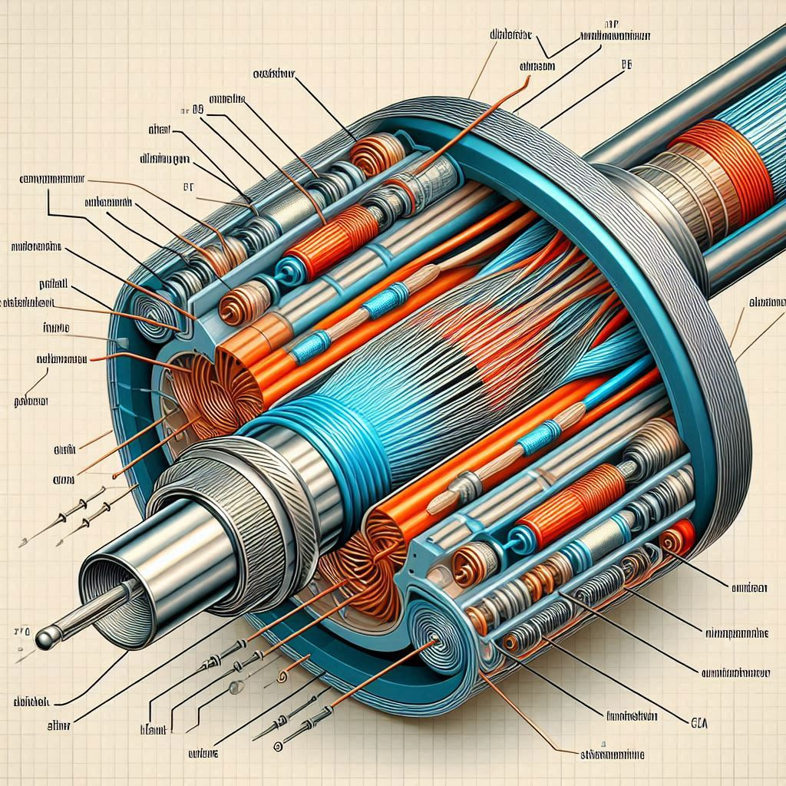

Diccionario
Preámbulo
- Definición
-
Introducción a un tema o un libro que no va de forma directa sino que va dando un rodeo antes de comenzar.
- Ejemplo
-
El prólogo de un libro.
Coaxial

- Definición
-
Coaxial significa que dos o más figuras comparten un eje común; es el análogo lineal tridimensional de concéntrico.
El cable coaxial, como ejemplo común, tiene un hilo conductor en el centro, un conductor externo circunferencial; ambos están separados por un medio aislante llamado dieléctrico.
- Ejemplo
-
El cable de antena de la tv digital.